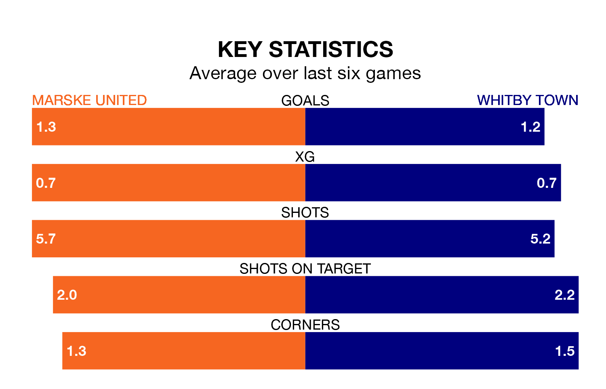

Marske United host Whitby Town on Saturday at the GER Stadium in the Northern Premier League.
In their last league match, on December 30, Marske lost to Morpeth Town 2-0 at home.
Whitby won, 3-0 at home against Basford United on February 3.
Marske are 19th in the table after 22 games, of which they have won seven and lost 15, earning 21 points.
Whitby are 10 places ahead of United in ninth, with 13 wins and six draws putting them on 45 points.
With 30 goals in 22 games so far this season, the hosts are the league's joint-third-lowest scorers with 1.4 goals per game. And they are conceding more than average, letting in 53 goals at a rate of 2.4 per game.
Town, meanwhile, are average scorers, with 1.7 goals per game. They have conceded 1.2 goals per game.
In the last five years, Marske and Whitby have played each other on four occasions. Marske won one of them, Whitby two, and they drew once.
On average, Marske scored 1.0 goal and Whitby 1.5 in those matches.
Their last meeting was on September 26, when Whitby won 4-2 at home.
Marske are in mixed form in the Northern Premier League, with three wins and three losses from their last six games.
With three wins and a draw over that period, the away team's form is slightly better – they have taken 10 points from 18, compared to Marske's nine.
Updated: 12:06 (UTC), 15/02/24